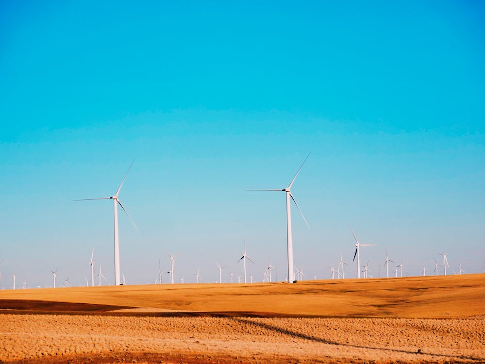
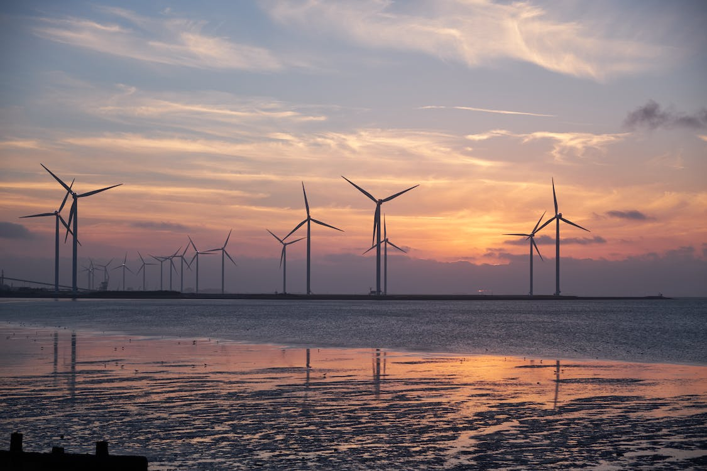

A energia eólica é uma das formas mais limpas e renováveis de energia disponíveis atualmente. Ela é gerada a partir da força do vento, que é captada por turbinas eólicas para produzir eletricidade. A energia eólica é uma fonte de energia renovável, o que significa que nunca se esgota, ao contrário dos combustíveis fósseis.
A energia eólica tem sido uma alternativa cada vez mais popular à energia hidrelétrica. Enquanto a energia hidrelétrica é dependente de fontes de água em movimento, a energia eólica é dependente apenas do vento, que é muito mais abundante e constante. Além disso, as turbinas eólicas podem ser instaladas em uma ampla variedade de locais, desde áreas costeiras até áreas de montanha.
A energia eólica também é uma das formas mais seguras de produção de energia. Ao contrário das usinas de energia nuclear, por exemplo, as turbinas eólicas não emitem gases tóxicos ou perigosos. Além disso, a produção de energia eólica não requer grandes reservatórios de água, como acontece com a energia hidrelétrica, evitando assim a interrupção de ecossistemas naturais e comunidades locais que vivem em torno desses reservatórios.
No entanto, assim como qualquer outra forma de energia, a energia eólica tem seus próprios desafios. Uma das principais questões é a necessidade de grandes áreas de terra para a instalação das turbinas eólicas, o que pode afetar negativamente a paisagem natural e a vida selvagem local. Além disso, as turbinas eólicas produzem algum nível de ruído, que pode ser um problema para as comunidades locais que vivem próximas às turbinas.
Apesar desses desafios, a energia eólica é uma fonte de energia extremamente promissora e eficiente, que tem o potencial de ajudar a atender às crescentes necessidades energéticas globais enquanto protege o meio ambiente.